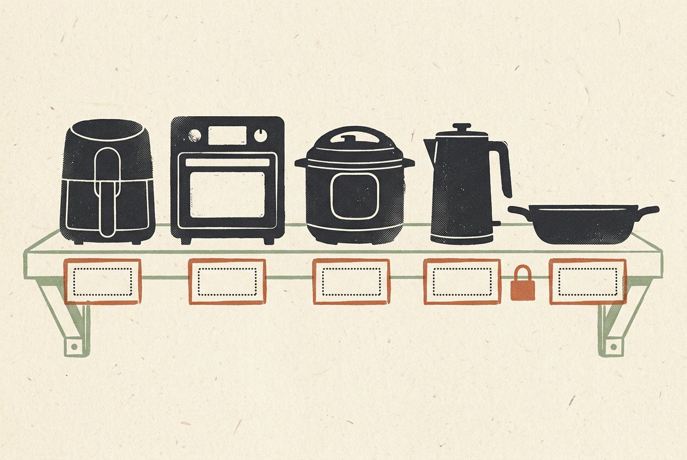

This is a shop that has not finished its paperwork. Below is every product we have in intake, with the fields that could not be confirmed left empty instead of filled in. When a record clears verification, its card gains a price, a rating, and a link — and the register shows when and how that happened.

An honest picture of the current state: five shapes on a shelf, no labels, no prices, and one padlock where the buy button would be.
In intake
Tap any card for the register entry behind it.
0 verified listings5 intake records
Listing not verified
in intake
Nothing about this listing is confirmed yet — no name, no price, no rating. The register page says exactly what is missing.
No submitted identifier resolved to a real listing yet, so there is nothing to link to. When a listing is confirmed, this card gains a price, a rating and a working button.
No submitted identifier resolved to a real listing yet, so there is nothing to link to. When a listing is confirmed, this card gains a price, a rating and a working button.
No submitted identifier resolved to a real listing yet, so there is nothing to link to. When a listing is confirmed, this card gains a price, a rating and a working button.
No submitted identifier resolved to a real listing yet, so there is nothing to link to. When a listing is confirmed, this card gains a price, a rating and a working button.
No submitted identifier resolved to a real listing yet, so there is nothing to link to. When a listing is confirmed, this card gains a price, a rating and a working button.
Amazon defines an ASIN as a unique 10-character alphanumeric code. All five submitted values are 9 characters. There is no listing to link to, and a link that 404s is worse for a reader than no link. FLG-001.
The host is not Amazon's
Product pages live at amazon.com/dp/<ASIN> and an Associates link carries the tag as a URL parameter. The submitted form has neither, so it cannot be shown to attribute a click. FLG-002.
Nothing was called invalid
Where the supplied short links go was not observed from here. “Unobserved” is not “invalid”, and the copy refuses to swap the two. FLG-003.